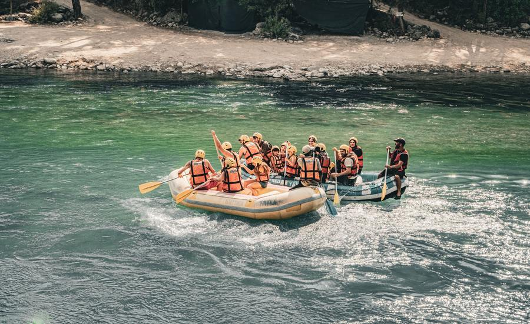
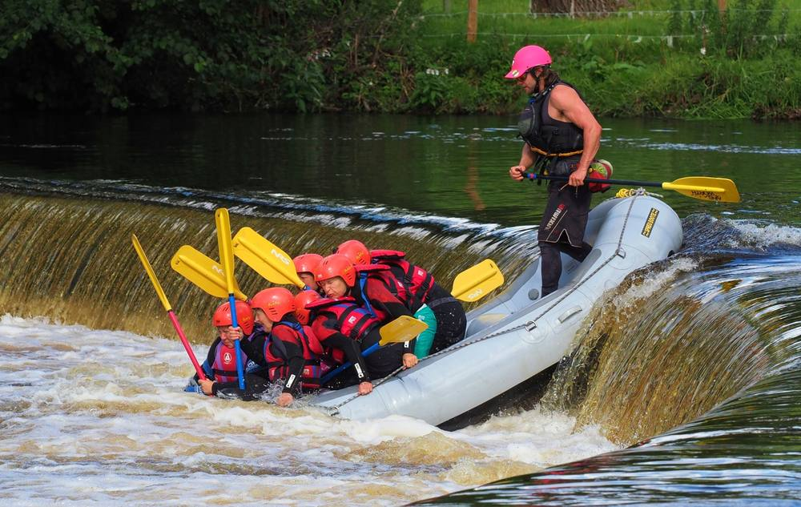

Our Rafting Trips
Find your perfect adventure — from family-friendly to extreme!
Have Questions?
Not sure which trip is right for you? Our team is here to help!
Contact Us Now
Los Dientes del Diablo
Extreme - 8 hours
Our most challenging run through narrow
canyons and Class IV-V rapids. Includes lunch and professional photos. Perfect
for thrill-seekers with previous experience.

Big Mallard
Intermediate - 6 hours
A perfect balance of excitement and
scenery. Class III-IV rapids with calm stretches for wildlife viewing. Great for
groups and families with older kids (12+).

Half Day Adventure
Beginner - 3 hours
Ideal for first-timers and families with
young children. Gentle Class I-II rapids, safety briefing, and all equipment
provided. Morning and afternoon departures.
Available Trips at a Glance
| Trip Name | Duration | Difficulty | Price | Min. Age |
|---|---|---|---|---|
| Los Dientes del Diablo | 8 hours | Extreme (IV-V) | ₵250 | 16 |
| Big Mallard | 6 hours | Intermediate (III-IV) | ₵180 | 12 |
| Half Day Adventure | 3 hours | Beginner (I-II) | ₵90 | 6 |
| River Run | 4 hours | Beginner (II) | ₵110 | 8 |
| Canyon Adventure | 2 Days | Intermediate (III) | ₵450 | 14 |